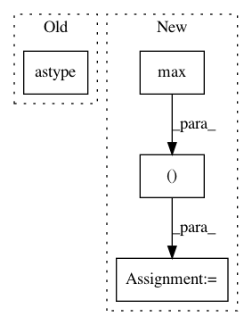

490e5785e68a143271beb4197f8fe6be75ff1b05,functions/FocalStatistics.py,FocalStatistics,updatePixels,#FocalStatistics#,53
Before Change
m = pixelBlocks["raster_mask"]
pixelBlocks["output_pixels"] = p[s, s].astype(props["pixelType"])
pixelBlocks["output_mask"] = m[s, s].astype("u1")
self.emit("Trace|Request Raster|{0}\n".format(props))
self.emit("Trace|Request Size|{0}\n".format(shape))
After Change
def updatePixels(self, tlc, shape, props, **pixelBlocks):
s = slice(None, None, max(1, self.factor))
p = pixelBlocks["raster_pixels"]
m = pixelBlocks["raster_mask"]
if len(p.shape) <= 2 or p.shape[0] == 1:
outP = p[s, s]
outM = m[s, s]
else:
outP = p[:, s, s]
outM = m[:, s, s]
pixelBlocks["output_pixels"] = outP.astype(props["pixelType"])
pixelBlocks["output_mask"] = outM.astype("u1")
self.emit("Trace|FocalStatistics.updatePixels|Request Raster|{0}\n".format(props))
self.emit("Trace|FocalStatistics.updatePixels|Request Size|{0}\n".format(shape))
In pattern: SUPERPATTERN
Frequency: 3
Non-data size: 4
Instances
Project Name: Esri/raster-functions
Commit Name: 490e5785e68a143271beb4197f8fe6be75ff1b05
Time: 2014-10-30
Author: akferoz@esri.com
File Name: functions/FocalStatistics.py
Class Name: FocalStatistics
Method Name: updatePixels
Project Name: Esri/raster-functions
Commit Name: 0873b10d3058c2da26a57d23caed70cbacaac699
Time: 2014-10-30
Author: akferoz@esri.com
File Name: functions/FocalStatistics.py
Class Name: FocalStatistics
Method Name: updatePixels
Project Name: cesium-ml/cesium
Commit Name: e547a82c24b37c157bc9b40d2724a7b1fd0a7b0f
Time: 2017-04-17
Author: brettnaul@gmail.com
File Name: cesium/featurize.py
Class Name:
Method Name: save_featureset